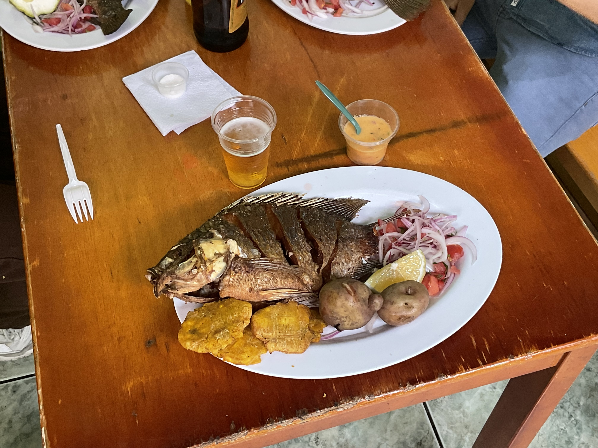

Significa lago de sangre, Yawar= sangre, Kucha= lago, esto en idioma kichwa, esta laguna eutrófica con 12000 años de antigüedad lleva su nombre por investigaciones históricas una sangrienta batalla sucedió en este lugar entre las poblaciones nativas de la región norte de la sierra: Cayambis, Otavalo, Caranquis y los Incas.
Por parte de su gastronomía encontrarás la famosa tilapia frita roja y negra acompañada de papas, patacones, encurtido, su buena salsa de ají y opcional una porción de arroz blanco
